Рівні зуби та правильний прикус під контролем досвідченого ортодонта
Neodent імпланти, 3D-діагностика, комфорт і гарантія результату.
Записатися на консультацію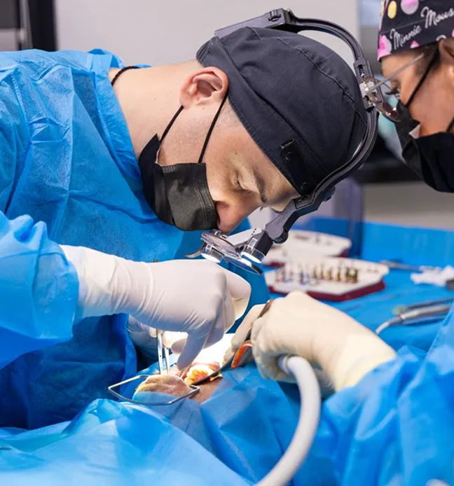
Наші послуги з імплантації зубів
Коронки на зуб
Коронки на зуб відновлюють форму, функцію та естетику природного зуба. Вони допомагають захистити пошкоджені або ослаблені зуби після лікування карієсу, тріщин або великих пломб. Виготовляються з різних матеріалів, включаючи металокераміку та безметалеву кераміку, що забезпечує довговічність і природний вигляд.
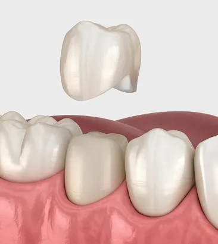
Коронки на імпланти
Коронки на імпланти відновлюють відсутні зуби і встановлюються на штучний імплант замість природного кореня. Вони відтворюють форму та колір природних зубів, забезпечують міцність при жуванні та довговічність. Це оптимальне рішення для тих, хто втратив один або декілька зубів.
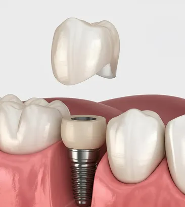
Акриловий протез
Акриловий протез — легкий і гіпоалергенний знімний протез, який відрізняється високою міцністю і естетикою. Він зручний у використанні та не викликає подразнень ясен. Ідеально підходить для пацієнтів, які потребують часткової заміни зубів.
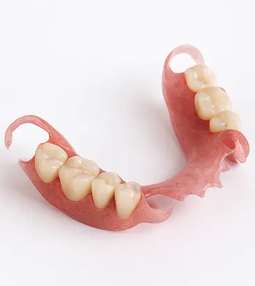
Нейлонові протези
Нейлонові протези виготовляються з гнучкого матеріалу, що повторює форму ясен. Вони легкі, комфортні та не викликають подразнень. Ідеально підходять для пацієнтів з підвищеною чутливістю або для тих, хто шукає естетичне та зручне рішення для часткової або повної заміни зубів.
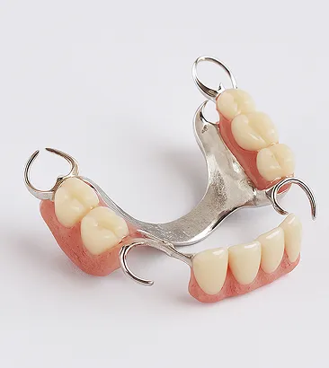
Нейлонові протези
Нейлонові протези виготовляються з гнучкого матеріалу, що повторює форму ясен. Вони легкі, комфортні та не викликають подразнень. Ідеально підходять для пацієнтів з підвищеною чутливістю або для тих, хто шукає естетичне та зручне рішення для часткової або повної заміни зубів.
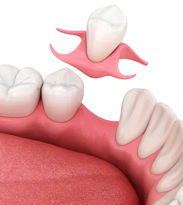
Мостовидний протез
Мостовидний протез відновлює один або декілька відсутніх зубів, спираючись на сусідні здорові зуби. Він міцно фіксується та дозволяє відновити жувальну функцію та естетику посмішки. Це класичне та надійне рішення для пацієнтів, які не потребують імплантів.
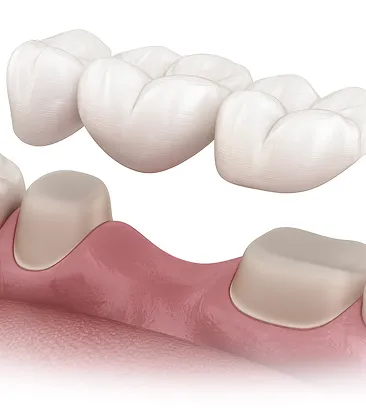
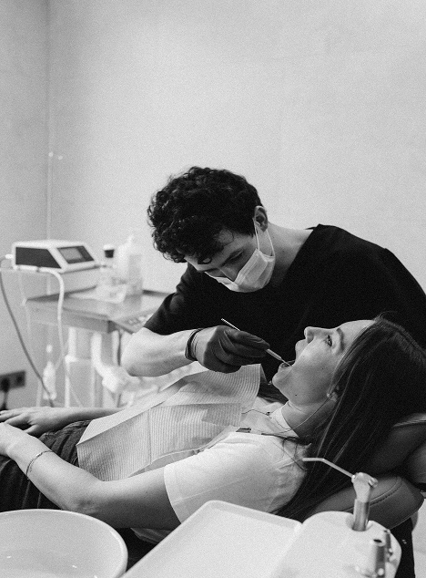
Які брекети ми встановлюємо
✓ Металеві брекети
- найміцніші
- швидке лікування
- доступна ціна
✓ Керамічні брекети
- менш помітні
- естетичні
- популярні серед дорослих
✓ Сапфірові брекети
- майже прозорі
- максимально естетичні
✓ Самолігіруючі брекети
- менше візитів до лікаря
- швидша корекція
Переваги імплантатів STRAUMANN І OSSTEM
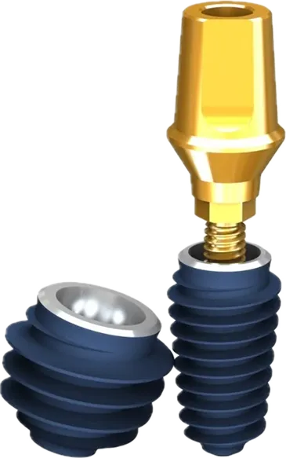
Як відбувається процедура?
Імплантація уві сні — комфортно, безпечно, без стресу
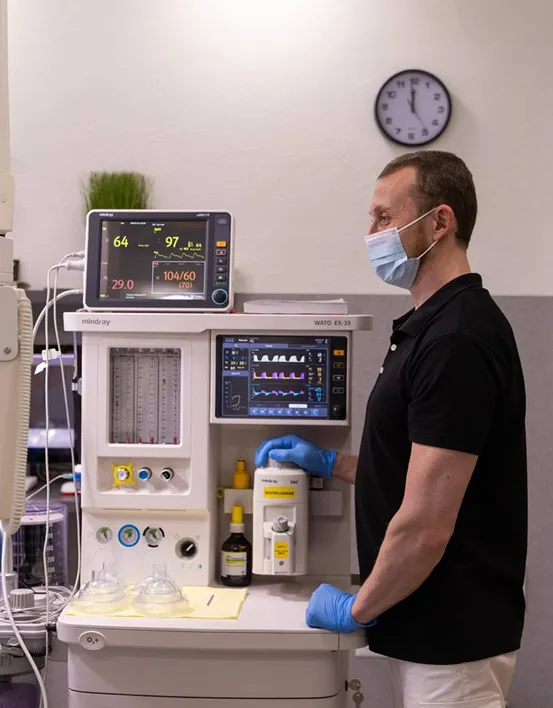
Наша команда
Чому обрають нас?
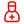
Ваш стоматолог – професіонал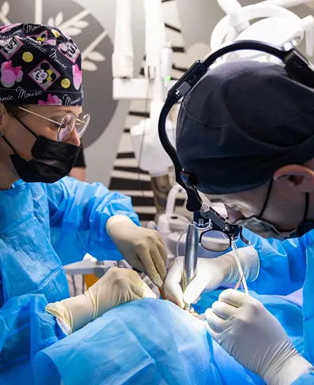
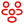
Сімейна стоматологія для всіхДо та після наших пацієнтів
Що кажуть наші пацієнти
Ми в процесі роботи
Почніть свій шлях до ідеальної посмішки разом з нами.
Заповніть форму
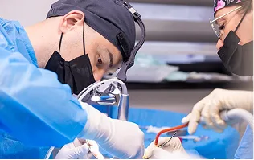